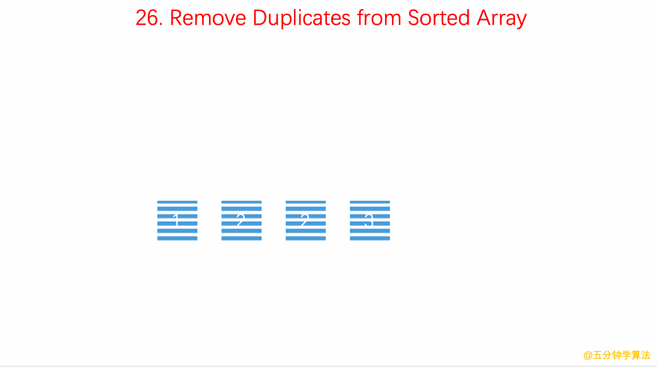
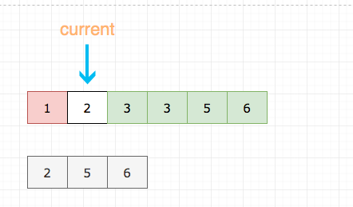
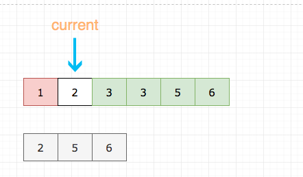

Question: 9 Palindrome Number
Determine whether an integer is a palindrome. An integer is a palindrome when it reads the same backward as forward.
Example 1:
Input: 121
Output: true
Example 2:
Input: -121
Output: false
Explanation: From left to right, it reads -121. From right to left, it becomes 121-. Therefore it is not a palindrome.
Example 3:
Input: 10
Output: false
Explanation: Reads 01 from right to left. Therefore it is not a palindrome.
Resource:
Click!
Key Points
- String, Number 都可以
GIF
(gif：https://github.com/MisterBooo/LeetCodeAnimation)
Solution in JS
// through string and Array()
function huiwen (word){
word=word.toString();
var arr= new Array();
for( var i = 0 ; i < word.length ; i ++ ){
arr.push( word[i] );
}
var rword='' ;
while( arr.length> 0 ){
rword += arr.pop();
}
if( word == rword ){
return true;
}else{
return false;
}
}
Question: 20 Valid Parenthesis
Given a string containing just the characters '(', ')', '{', '}', '[' and ']', determine if the input string is valid.
An input string is valid if:
Open brackets must be closed by the same type of brackets.
Open brackets must be closed in the correct order.
Note that an empty string is also considered valid.
Example 1:
Input: "()"
Output: true
Example 2:
Input: "()[]{}"
Output: true
Example 3:
Input: "(]"
Output: false
Example 4:
Input: "([)]"
Output: false
Example 5:
Input: "{[]}"
Output: true
Resource:
Click!
solution in JAVA : click
Key Points
1. Stack
2. push(), pop()
GIF

(gif： https://github.com/MisterBooo/LeetCodeAnimation)
Solution in JS
var s;
var isValidParenthesis = function (s){
// let valid = true;
const stack = [];
const mapper = {
"{" : "}",
"[" : "]",
"(" : ")"
}
for (let i in s){
const v=s[i];
console.log("v--"+v);
if(['(','[','{'].indexOf(v) > -1){
//说明数组里面有v这个元素
stack.push(v);
console.log('stack[p]--'+stack);
}else{
const peak = stack.pop();
console.log('peak--'+peak);
console.log('stack[a]--' + stack);
console.log('mapper[peak]--'+mapper[peak])
if (v !== mapper[peak]){
return false;
}
}
}
if (stack.length > 0) return false;
return true;
}
console.log(isValid('[())'))
Question: 26.remove-duplicates-from-sorted-array
Given a sorted array nums, remove the duplicates in-place such that each element appear only once and return the new
length.
Do not allocate extra space for another array, you must do this by modifying the input array in-place with O(1) extra
memory.
Example 1:
Given nums = [1,1,2],
Your function should return length = 2, with the first two elements of nums being 1 and 2 respectively.
It doesn't matter what you leave beyond the returned length. Example 2:
Given nums = [0,0,1,1,1,2,2,3,3,4],
Your function should return length = 5, with the first five elements of nums being modified to 0, 1, 2, 3, and 4
respectively.
It doesn't matter what values are set beyond the returned length. Clarification:
Confused why the returned value is an integer but your answer is an array?
Note that the input array is passed in by reference, which means modification to the input array will be known to the
caller as well.
Internally you can think of this:
// nums is passed in by reference. (i.e., without making a copy)
int len = removeDuplicates(nums);
// any modification to nums in your function would be known by the caller.
// using the length returned by your function, it prints the first len elements.
for (int i = 0; i < len; i++) { print(nums[i]); }
Resources:
Click!solution in JAVA: click
Key Points
GIF
(gif： https://github.com/MisterBooo/LeetCodeAnimation)
Solution in JS
var removeDuplicates = function(nums) {
const size = nums.length;
let slowP = 0;
for (let fastP = 0; fastP < size; fastP++) {
if (nums[fastP] !== nums[slowP]) {
slowP++;
nums[slowP] = nums[fastP]
}
}
return slowP + 1;
};
// Using Set (ES6)
var removeDuplicates = function(nums) {
let set = new Set(nums);
let setArr = [...set];
return setArr;
};
Question: 55.maximum-sum-subarray-cn
Given an integer array nums, find the contiguous subarray (containing at least one number) which has the largest sum and return its sum.Example:
Input: [-2,1,-3,4,-1,2,1,-5,4],Output: 6
Explanation: [4,-1,2,1] has the largest sum = 6.
Follow up:
If you have figured out the O(n) solution, try coding another solution using the divide and conquer approach, which is more subtle.
Resources:
Click!Key Points
Solution in JS
解法二 - 前缀和 + 暴力
var maximumSumSubarray = function(arr){ var arrLength = arr.length; var max = -Number.MAX_VALUE; var sum =0; for(let i=0;i < arrLength;i++){ sum=0; for(let j=i;j < arrLength;j++){ sum +=arr[j]; if(sum > max){ max = sum; } } } return max }解法三 - 优化前缀和
var maximumSumSubarray = function(arr) { const len = arr.length; let max = arr[0]; let min = 0; let sum = 0; for (let i = 0; i < len; i++) { sum += arr[i]; if (sum - min > max) max = sum - min; if (sum < min) min = sum; } return max; } var maximumSumSubarray = function(arr) { const len = arr.length; let max = arr[0]; for (let i = 1; i < len; i++) { arr[i] = Math.max(0, arr[i - 1]) + arr[i]; if (arr[i] > max) max = arr[i]; } return max; }
Question: 88 Merge_sorted_array
Given two sorted integer arrays nums1 and nums2, merge nums2 into nums1 as one sorted array.Note:
The number of elements initialized in nums1 and nums2 are m and n respectively.
You may assume that nums1 has enough space (size that is greater or equal to m + n) to hold additional elements from nums2.
Example:
Input:
nums1 = [1,2,3,0,0,0], m = 3
nums2 = [2,5,6], n = 3
Output: [1,2,2,3,5,6]
Resources:
https://github.com/azl397985856/leetcode/blob/master/problems/88.merge-sorted-array.mdKey Points
// 这种解法连m都用不到
// 这显然不是出题人的意思
if (n === 0) return;
let current2 = 0;
for(let i = nums1.length - 1; i >= nums1.length - n ; i--) {
nums1[i] = nums2[current2++];
}
nums1.sort((a, b) => a - b);
// 当然你可以自己写排序，这里懒得写了，
//因为已经偏离了题目本身
我这里理解可以将 arr2 直接加到arr1 的后面，然后进行排序就可以了
var arr1=[1,2,3];
var arr2=[3,4,5];
arr1.push.apply(arr1,arr2);
console.log(arr1.sort()); // [1,2,3,3,4,5]
这里没有考虑到0这个元素，和题目不符合，那么考虑到0，并且需要删除的话，需要进行遍历，这里只考虑arr1当中有0的情况
var arr1=[1,2,3,0,0,0];
var arr2=[3,4,5];
arr1.push.apply(arr1,arr2);
arr1.sort();
console.log(arr1);
for(let i=0;i < arr1.length;i++){
if (arr1[0]===0){arr1.shift();}
}
console.log(arr1);
这里要求原地修改，其实我们能只要从后往前比较，并从后往前插入即可。我们需要三个指针：
- current 用于记录当前填补到那个位置了
- m 用于记录 nums1 数组处理到哪个元素了
- n 用于记录 nums2 数组处理到哪个元素了
- 灰色代表 num2 数组已经处理过的元素
- 红色代表当前正在进行比较的元素
- 绿色代表已经就位的元素
下面的例子里m=3，n=3

 

/**
* @param {number[]} nums1
* @param {number} m
* @param {number[]} nums2
* @param {number} n
* @return {void} Do not return anything, modify nums1 in-place instead.
*/
var mergeSortedArray = function(nums1, m, nums2, n) {
// 设置一个指针，指针初始化指向nums1的末尾
// 然后不断左移指针更新元素
let current = nums1.length - 1;
while (current >= 0) {
// n===0 没必要继续了
if (n === 0) return;
// 为了方便大家理解，这里代码有点赘余
if (m < 1) {
nums1[current--] = nums2[--n];
continue;
}
// 后置型是包含的语句被求值后才执行的
if (n < 1) {
nums1[current--] = nums1[--m];
continue;
}
// 取大的填充 nums1的末尾
// 然后更新 m 或者 n
if (nums1[m - 1] > nums2[n - 1]) {
nums1[current--] = nums1[--m];
} else {
nums1[current--] = nums2[--n];
}
}
};
Question 104: maximum-depth-of-binary-tree
Given a binary tree, find its maximum depth.The maximum depth is the number of nodes along the longest path from the root node down to the farthest leaf node.
Note:
A leaf is a node with no children.Example:
Given binary tree [3,9,20,null,null,15,7],|| For [1, 2, 5, 6, -1, 8, 11] Index 0 = 1 Index 1 = 2 Index 2 = 5,
3
/ \
9 20
/ \
15 7
1
/ \
2 5
/ \ / \
6 -1 8 11
return its depth = 3.
Resources:
Click!Key Points
Solution in JS
/*
* @lc app=leetcode id=104 lang=javascript
*
* [104] Maximum Depth of Binary Tree
*/
/**
* Definition for a binary tree node.
* function TreeNode(val) {
* this.val = val;
* this.left = this.right = null;
* }
*/
/**
* @param {TreeNode} root
* @return {number}
*/
var maxTreeDepth = function(root) {
if (!root) return 0;
if (!root.left && !root.right) return 1;
// 层次遍历 BFS
let cur = root;
const queue = [root, null];
let depth = 1;
while ((cur = queue.shift()) !== undefined) {
if (cur === null) {
// 注意⚠️： 不处理会无限循环，进而堆栈溢出
if (queue.length === 0) return depth;
depth++;
queue.push(null);
continue;
}
const l = cur.left;
const r = cur.right;
if (l) queue.push(l);
if (r) queue.push(r);
}
return depth;
};